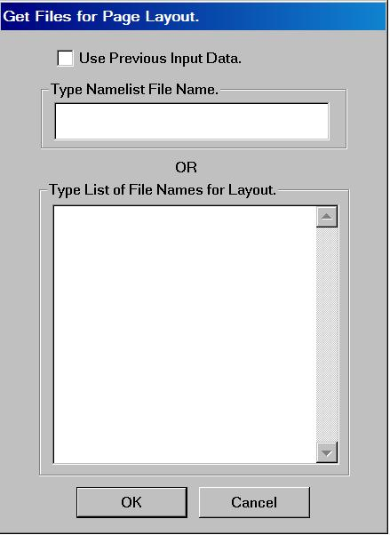
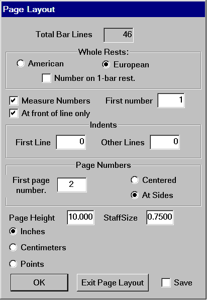
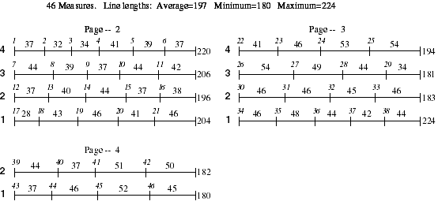
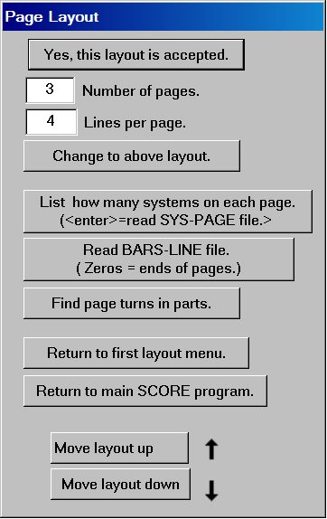
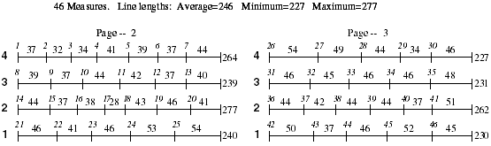

This is excellent for the delicate job of page layout, but there are times when you cannot or should not use it. For example, suppose you were doing a vocal score that included a piano part on two staves and different numbers of vocal parts on staves above it. Sometimes you might have a solo voice, sometimes a chorus and many different soloists.
Page Layout can only process files where all the systems contain the same
number of staves. If you had three staves in the first file (one soloist and piano) and then seven staves in the next (the chorus joined in with the soloist),
the program would not understand how to shuffle measures around. You might be able to process the files in sections, if there were continuous sections where the files all contained the same number of staves.
Also it is important that the first ordinary bar line
of each system encompass the full range from the bottom staff to the top
staff.
To start Page Layout, type "LAY" or <alt>L or click on the Page Layout box.

The layout system needs to know what files you want to process. You can either specify every file name in a namelist file (imagine if you had a very long piece), or you can
type in the file names directly. The best procedure is to name all your files in
an orderly alphanumeric series. You must give the first file name (with complete
path) followed by the number of files to be processed.
For example the following reads 23 files.:
\BACH\PARTITA01.MUS 23
(Note that if you are processing more than 9 files, the numbering must begin with the digit zero, as above.)
If you have already processed some files and wish to try a different layout with the same input material, you may restart by clicking on the top box above, "Use Previous Input Data."
If the files have been successfully read in, a dialog box such as the following will appear.

After clicking on <OK>, a first draft of the layout will appear. The numbers within each measure indicate the ideal space required for the measure's contents. The number at the end of each line gives the total number of space units "ideally" required. Lines with original lengths of about 150 to 300 will usually give acceptable results when they are scaled to fit Score's basic 200-unit staff length.


If we type "2" into the "Number of Pages" box and then click on "Change to above layout," the new layout will appear as follows. The lines will be a little more crowded but the results will be quite acceptable. If things get too crowded and you want to keep to a minimum number of pages, you can reduce the staff size as set in the earlier dialog box.

After using Page Layout or Part extraction, the first output file will come up
for editing. Usually slurs and ties will require some touch up editing, and hair-pins may also get shifted around.
Score has a powerful Group Command to edit all the slurs on an entire page. After you open the file in
Score, type CRV and follow the prompts.